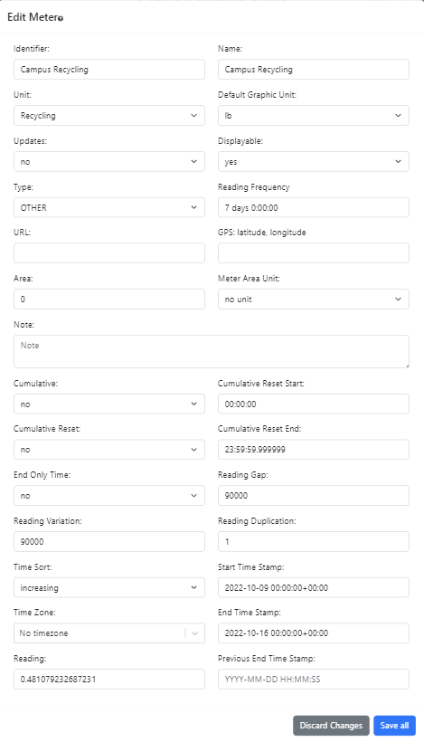

The admin meter editing popup, shown in the following figure, allows admin users to editing an existing meter on an OED site. It is accessed from the admin meter viewing page by clicking the "Edit Meter" button at the bottom of each meter card.

All information shown on this page is based upon the help example.
The input values are similar to those described for creating meters. One difference is that the current values for the input will be shown rather than the default values and the default values will only apply to some inputs if the input is cleared.
The two buttons at the bottom of the popup are similar. However, clicking outside the popup but within the OED web browser window will retain the values entered if you click on the edit button again without leaving the meter page.
None